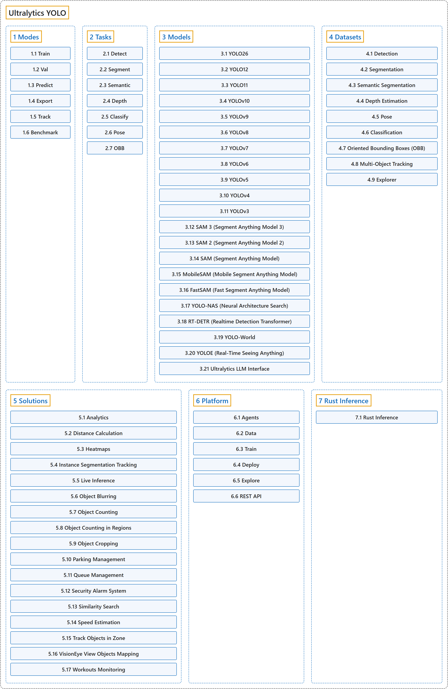

Ultralytics YOLO
Classification

Glossary
| Term | Definition | 中文翻译 | Source |
|---|---|---|---|
| Ultralytics YOLO Ultralytics YOLO |
"Ultralytics YOLO is a family of real-time computer vision models for object detection, instance segmentation, semantic segmentation, depth estimation, classification, pose estimation, oriented bounding boxes, and tracking, available through one Python package and CLI." | Ultralytics YOLO 是一系列实时计算机视觉模型，用于目标检测、实例分割、语义分割、深度估计、分类、姿态估计、旋转边界框和跟踪，通过一个 Python 包和命令行工具提供。 | Ultralytics, n.d.-h, "Ultralytics YOLO Docs", para. 1 |
| 1 Modes 模式 |
(context) "Ultralytics YOLO26 is not just another object detection model; it's a versatile framework designed to cover the entire lifecycle of machine learning models—from data ingestion and model training to validation, deployment, and real-world tracking." | （语境）Ultralytics YOLO26 不只是又一个目标检测模型；它是一个多用途框架，旨在覆盖机器学习模型的整个生命周期：从数据摄取、模型训练，到验证、部署和真实场景中的跟踪。 | Ultralytics, n.d.-c, "Introduction", para. 1 |
| 2 Tasks 任务 |
(context) "Ultralytics YOLO26 is a versatile AI framework that supports multiple computer vision tasks. The framework can be used to perform detection, segmentation, semantic segmentation, depth estimation, classification, pose estimation, and OBB." | （语境）Ultralytics YOLO26 是一个支持多种计算机视觉任务的多用途 AI 框架。该框架可以用来做检测、分割、语义分割、深度估计、分类、姿态估计和旋转边界框（OBB）。 | Ultralytics, n.d.-a, "Computer Vision Tasks Supported by Ultralytics YOLO26", para. 1 |
| 3 Models 模型 |
(context) "We offer support for a wide range of models, each tailored to specific tasks like object detection, instance segmentation, semantic segmentation, depth estimation, image classification, pose estimation, and oriented bounding boxes." | （语境）我们支持多种模型，每种都针对特定任务而设计，如目标检测、实例分割、语义分割、深度估计、图像分类、姿态估计和旋转边界框。 | Ultralytics, n.d.-d, "Models Supported by Ultralytics", para. 1 |
| 4 Datasets 数据集 |
(context) "Ultralytics provides support for various datasets to facilitate computer vision tasks such as detection, instance segmentation, semantic segmentation, depth estimation, classification, pose estimation, and oriented bounding boxes (OBB)." | （语境）Ultralytics 支持多种数据集，以便开展计算机视觉任务，如检测、实例分割、语义分割、深度估计、分类、姿态估计和旋转边界框（OBB）。 | Ultralytics, n.d.-b, "Datasets Overview", para. 1 |
| 5 Solutions 解决方案 |
"Ultralytics Solutions provide cutting-edge applications of YOLO models, offering real-world solutions like object counting, blurring, and security systems, enhancing efficiency and accuracy in diverse industries." | Ultralytics Solutions 提供 YOLO 模型的前沿应用，给出目标计数、模糊处理、安防系统等真实场景的解决方案，在各行各业提升效率和准确率。 | Ultralytics, n.d.-g, "Ultralytics Solutions: Harness YOLO26 to Solve Real-World Problems", para. 1 |
| 6 Platform 平台 |
"Ultralytics Platform is a comprehensive end-to-end computer vision platform that streamlines the entire ML workflow from data preparation to model deployment." | Ultralytics Platform 是一个全面的端到端计算机视觉平台，简化从数据准备到模型部署的整个机器学习工作流。 | Ultralytics, n.d.-f, "Ultralytics Platform", para. 1 |
| 7 Rust Inference Rust 推理 |
"Ultralytics Inference is a high-performance YOLO inference library and command-line tool written in Rust." | Ultralytics Inference 是一个用 Rust 编写的高性能 YOLO 推理库和命令行工具。 | Ultralytics, n.d.-e, "Ultralytics Inference for Rust", para. 1 |
References
Ultralytics. (n.d.-a). Computer Vision Tasks Supported by Ultralytics YOLO26. Ultralytics YOLO Docs (ultralytics 8.4.194). Retrieved October 31, 2026, from https://docs.ultralytics.com/tasks/
Ultralytics. (n.d.-b). Datasets Overview. Ultralytics YOLO Docs (ultralytics 8.4.194). Retrieved October 31, 2026, from https://docs.ultralytics.com/datasets/
Ultralytics. (n.d.-c). Introduction. Ultralytics YOLO Docs (ultralytics 8.4.194). Retrieved October 31, 2026, from https://docs.ultralytics.com/modes/
Ultralytics. (n.d.-d). Models Supported by Ultralytics. Ultralytics YOLO Docs (ultralytics 8.4.194). Retrieved October 31, 2026, from https://docs.ultralytics.com/models/
Ultralytics. (n.d.-e). Ultralytics Inference for Rust. Ultralytics YOLO Docs (ultralytics 8.4.194). Retrieved October 31, 2026, from https://docs.ultralytics.com/inference/
Ultralytics. (n.d.-f). Ultralytics Platform. Ultralytics YOLO Docs (ultralytics 8.4.194). Retrieved October 31, 2026, from https://docs.ultralytics.com/platform/
Ultralytics. (n.d.-g). Ultralytics Solutions: Harness YOLO26 to Solve Real-World Problems. Ultralytics YOLO Docs (ultralytics 8.4.194). Retrieved October 31, 2026, from https://docs.ultralytics.com/solutions/
Ultralytics. (n.d.-h). Ultralytics YOLO Docs. Ultralytics YOLO Docs (ultralytics 8.4.194). Retrieved October 31, 2026, from https://docs.ultralytics.com/